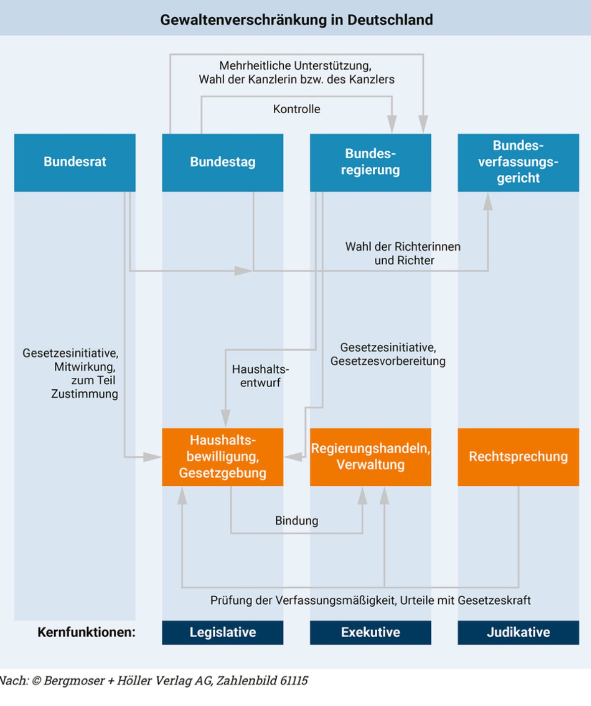

AFB I fragt Wissen ab, AFB II verlangt Erklären und Anwenden, AFB III verlangt ein begründetes Urteil.
Schulbuch Kapitel 3.2 · Material M7 sowie Transfer und Anwendung. Wo stecken Locke, Rousseau und Montesquieu heute im politischen System?
M7 "Wo finden sich die Einflüsse historischer Staatstheorien noch heute?" (S. 212-213): Text 1 zur Verfassungsbeschwerde als Garant der Grundrechte (Bundesverfassungsgericht) und Text 2 mit dem Schaubild Gewaltenverschränkung in Deutschland (S. 212-213): Bundesrat, Bundestag, Bundesregierung und Bundesverfassungsgericht mit den Kernfunktionen Legislative, Exekutive und Judikative.
Arbeite in Eigenarbeit an Text 1 und dem Schaubild in Text 2 (M7, S. 212-213). Aufgaben zu M7.
EigenarbeitAFB I-IIIOrdne aktuelle Spannungsfelder selbstständig den Theoretikern zu. Transfer- und Anwendungsaufgaben.
EigenarbeitGegenwartErgebnisse für dich bündeln, offene Fragen klären, dann Wechsel zur Produktseite.
EigenarbeitSicherungZum Schluss die einzige Partnerphase: Je zwei Lernende erklären sich gegenseitig eine Theorie aus M2 (S. 201-203) oder M6 (S. 210-211) in 60 Sekunden, dann Wechsel. Aufgabe steht am Ende der Seite.
PartnerarbeitWiederholungBevor du die Wissens-Checks bearbeitest: Lies zuerst Text 1 zur Verfassungsbeschwerde und werte das Schaubild "Gewaltenverschränkung in Deutschland" in Text 2 aus (M7, S. 212-213). Erst mit diesen Informationen kannst du die folgenden Aufgaben beantworten - sie prüfen dein Verständnis, nicht dein Vorwissen.
Welche beiden Organe bilden in Deutschland die Legislative (Gesetzgebung)?
Welche Aussagen zur Verfassungsbeschwerde treffen zu? Mehrere sind richtig - wähle alle aus und tippe auf Prüfen.
Erkläre mit M7 Text 1, was die Verfassungsbeschwerde ist und warum sie als Garant der Grundrechte gilt. Wer darf sie erheben, gegen wen richtet sie sich, und welche historische Theorie steckt dahinter?
Erwartbar: Die Verfassungsbeschwerde ermöglicht jeder natürlichen oder juristischen Person, ihre grundrechtlich garantierten Freiheiten gegenüber dem Staat durchzusetzen. Sie kann sich gegen Akte aller drei Gewalten richten (Rechtsprechung, Verwaltung, Gesetzgebung); die Person muss selbst, gegenwärtig und unmittelbar betroffen sein. Dahinter steht Lockes Idee der Naturrechte und begrenzten Regierung: staatliche Macht ist an Grundrechte gebunden (Rechtsstaat).

Beschreibe das Schaubild "Gewaltenverschränkung in Deutschland" (M7 Text 2). Ordne Bundesrat, Bundestag, Bundesregierung und Bundesverfassungsgericht den Kernfunktionen Legislative, Exekutive und Judikative zu und nenne ein Beispiel für eine Verschränkung.
Erwartbar: Legislative = Bundestag und Bundesrat (Gesetzgebung); Exekutive = Bundesregierung (Regierungshandeln, Verwaltung); Judikative = Bundesverfassungsgericht und Gerichte (Rechtsprechung). Verschränkung statt strikter Trennung: der Bundestag wählt und kontrolliert die Regierung, die Regierung bringt Gesetzentwürfe ein, das Gericht prüft Gesetze auf Verfassungsmäßigkeit und kann sie mit Gesetzeskraft kippen. Die Gewalten sind also verzahnt und kontrollieren sich gegenseitig.
Bewerte, inwieweit Montesquieus Ideal der strikten Gewaltenteilung in der deutschen Gewaltenverschränkung verwirklicht ist. Welche Spannung oder welcher Widerspruch ergibt sich daraus?
Erwartbar: Montesquieu wollte die Gewalten strikt trennen. In Deutschland sind sie bewusst verschränkt: Regierung und Parlamentsmehrheit bilden eine Einheit (Regierungsmehrheit), was der strikten Trennung von Legislative und Exekutive widerspricht. Kompensiert wird das durch Opposition, Föderalismus (Bundesrat) und vor allem das Bundesverfassungsgericht als starke Judikative. Ein begründetes Urteil erkennt: Montesquieus Ziel (Machtbegrenzung, Schutz vor Willkür) ist erreicht, seine Methode (strikte Trennung) aber nur teilweise.
Wähle ein aktuelles Spannungsfeld und ordne mindestens zwei Theoretiker zu. Wer hilft, das Problem besser zu verstehen? Mögliche Spannungsfelder: Sozialstaat, Klimapolitik, Migration, KI-Regulierung, direkte Demokratie, Schutz von Grundrechten.
Beispiel Sozialstaat: Locke fragt nach Grenzen staatlicher Eingriffe und Eigentumsschutz. Marx fragt nach sozialer Ungleichheit und Abhängigkeit. Burke fragt, ob Reformen die gewachsene Ordnung stabilisieren oder überfordern. Rousseau fragt, ob die Regelung dem Gemeinwillen dient. Montesquieu fragt, ob die Machtverteilung gewahrt bleibt.
Beurteile am Beispiel der direkten Demokratie: Sollte Deutschland mehr direktdemokratische Elemente einführen? Nutze Rousseaus Gemeinwille und Burkes Skepsis als Gegenpole.
Erwartbar: Für mehr direkte Demokratie spricht Rousseaus Volkssouveränität: Legitimation entsteht durch Beteiligung am Gemeinwillen. Dagegen spricht Burkes Skepsis: die repräsentierende Körperschaft soll nach Ueberzeugung und Sachverstand entscheiden, nicht nach Stimmung des Augenblicks (vgl. sein Volksvertreter-Text in M2). Ein gutes Urteil wiegt Beteiligung gegen Sachlichkeit und Minderheitenschutz ab und entscheidet begründet.
Ordne die vier Spannungsfelder je einem passenden Theoretiker-Paar zu und begründe kurz: (a) Freiheit und Sicherheit, (b) Tradition und Wandel, (c) Eigentum und soziale Gerechtigkeit, (d) Volkssouveränität und Repräsentation.
Erwartbar: (a) Freiheit und Sicherheit - Locke (Naturrechte, begrenzter Staat) vs. Rousseau/Montesquieu (Ordnung durch Gesetz und Institutionen). (b) Tradition und Wandel - Burke (Bewahrung) vs. Rousseau/Marx (Umbruch). (c) Eigentum und soziale Gerechtigkeit - Locke (Eigentumsschutz) vs. Marx (Kritik der Eigentumsverhältnisse). (d) Volkssouveränität und Repräsentation - Rousseau (Gemeinwille, Beteiligung) vs. Burke/Montesquieu (repräsentative, institutionell gebundene Herrschaft).
Die einzige Partnerphase der Einheit, ganz am Ende: Sucht euch eine Theorie aus M2 (S. 201-203) oder M6 (S. 210-211) und erklärt sie euch gegenseitig in 60 Sekunden. Dann wechselt die Partnerin bzw. der Partner, und ihr nehmt eine neue Theorie. Ziel: jede Theorie einmal frei erklärt haben. Runde für jede Erklärung: Theoretiker, historisches Problem, Kernidee, ein Fachbegriff, heutige Spur. Zuhörer gibt danach eine kurze Rückmeldung.
Fünf-Schritt-Gerüst für 60 Sekunden: (1) Wer? (z. B. Locke). (2) Auf welches Problem seiner Zeit antwortet er? (Absolutismus). (3) Kernidee in einem Satz (Naturrechte, begrenzte Regierung). (4) Passender Fachbegriff (Liberalismus, Rechtsstaat). (5) Wo steckt die Idee heute? (Grundrechte, Verfassungsbeschwerde). Wer alle fünf Schritte flüssig schafft, hat die Theorie sicher.